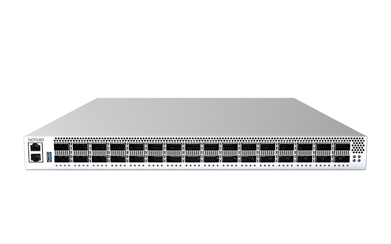

400GbE Switch
SND9510
SND9510
400GbE Data Center Switch
P4 Programmable · Intel® Xeon® D Skylake-D ComE Type 7
400G High Speed switch powered by Tofino2 12.8T ASIC. Featuring 32-port QSFP-DD, chassis depth 515 mm, 1RU form factor, and 1+1 1600W redundant CRPS power supply for carrier-grade reliability.

Need More Technical Information?
Our technical consultants will assist you in planning the right switch solution for your workload.